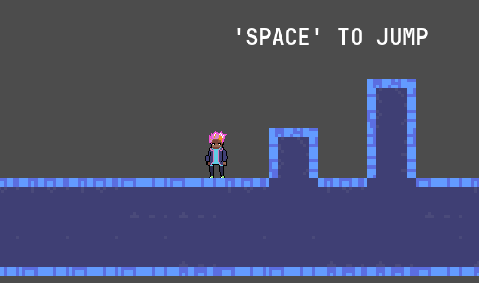
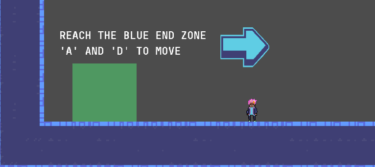
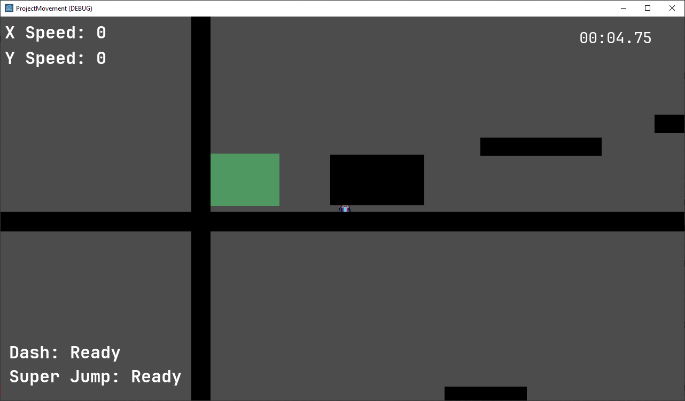
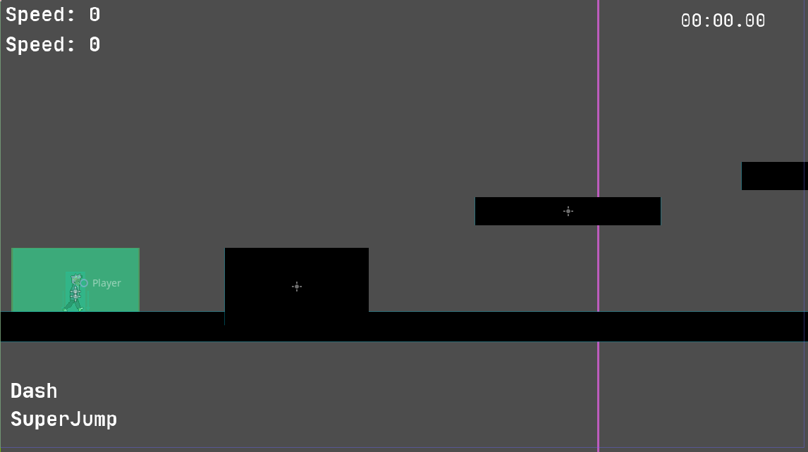
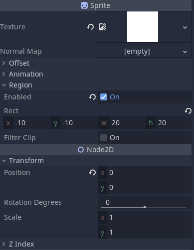

Dev Log 8: Polishing, and a Little Bit of Reflections
2/27/23
EDIT: We did a sort of investor pitch sort of not style presentation this week for the course. Click here to see our slide deck, which contains some more general discussion about development as well.
Hey, it's a new dev log. This past week of development we have been working on making changes based on feedback from Beta 3, finally merging in our tilesets, and making some other player experience changes along the way. There were also a few interesting bugs to tackle that I couldn't find anything about online, so it's worth mentioning them here.
Before we begin, I would just like to note that as of right now, we have not yet released a Beta 4 version of Project Movement. As always, when we do it will be on our Itch page, so be on the look out for that. Shouldn't be too long until we actually get to releasing that. Now, without further ado...
Changes
Classic dump of changes made in the past week. One of the requests we got from testers
about Beta 3 was that it would be nice to have some option to adjust the sound in the
game, as they found some effects too loud. I had implemented the sound system in Project Movement with
reference to this video from HeartBeast. I
created different AudioStreamPlayer for playing UI sounds and diegetic
sound effects, and made them use separates audio buses since I foresaw that a volume
adjustment for individual types of sounds might be useful. A quick Google yielded
this tutorial from GDQuest
about how to make a volume slider in Godot using HSlider. That was simple
enough to implement then connect to the main menu, and after a little bit of styling, we have
our volume sliders in the settings menu!
There have been big visual changes too! We have tilesets now implemented into the game, taking the place of the black rectangular ground blocks from before. Take a look:

And not just that. We also have some new arrow sprites around our levels, directing the player on where to go.

For a little rationale behind this decision, it felt like the easiest thing to do, and seemed reasonably effective.
Other solutions like moving the camera around at the start of each level might interrupt the flow of playing
multiple levels since each level is of varying size, and would add a good deal complexity because some of the
levels in Project Movement are not structured in a linear fashion. For example, "LEVEL3" looks like this:
Notice how to get to the blue end zone, the player cannot start from the green start zone and get there in a straight line. So hopefully with the inclusion of directional arrows and the existing "look around" function, it will be clear enough to players which direction they are supposed to go in.
There were also significant changes to the movement of the player. The player character's grounded movement speed has been made faster, the walljump horizontal speed faster as well. These changes were made because the air control of the player has increased. Where previously the air acceleration was around 1/10 of the grounded acceleration, it is now closer to 1/2. And the maximum horizontal velocity in the air due to air influence is around 3/4 the maximum grounded running speed. I felt that these changes improved the control of the player, and made the game feel slightly faster and more responsive. They do still align with the goal of building up momentum, since the player can't move any faster than before due to this change, only slow down faster. So in order to build up speed and make it through the levels quickly, it is still important to properly utilize movement abliities. Overall, this change doesn't compromise what was envisioned to be the core loop, so should be good. It's hard to show here, but check the game out when Beta 4 is released to get a feel of the new movement.
It's all a big hack, and a wonky bug because of it
In the early stages of the development of Project Movement, I needed a way
to draw simple platforms. And draw a lot of them to form a basic level to
see how the movement played. So here's what I did:

If you don't see anything, be assured that there is something above.
It is a single white pixel that was used as the sprite for all the platforms,
zones, and obstacles in Project Movement. It is still being used, just not for the
platforms/ground anymore. But since it's just a single pixel and I wanted to create
a reusable method for adding platforms by creating a ground scene and instancing that,
the Ground.tscn ended up with a single pixel image as a texture, scaled
up to match the standard size of the ground.
Let's step back for a moment. Why does this work? Since Godot has a "modulate" option
for every 2D node to change how they are drawn, and it "modulates" a node's color by
multiplying whatever color the node is by the modulate color, we could draw
rectangles of arbitrary color if we started with a pure white image just by setting
the "modulate" to the desired color. So that's what I did, for literally everything in
the game until we got sprites for some of it. The player, the ground, start and end zones,
kill zones, checkpoints, all had sprites of the 1-pixel white.png, just
scaled to match their size.
Turns out that was a mistake. After importing and implementing a tileset to serve as the ground instead of boring old rectangles, I noticed tearing/lines appearing on it. The Godot documentation has this to say:
If you're using a Camera2D to scroll your level, you may notice lines appearing between your tiles. To fix this, open Project Settings and enable Use Gpu Pixel Snap in the Rendering > 2d > Snapping section.Oh, OK wow, we are indeed using a Camera2D, so this seems like it will work. 
This is without the tileset serving as the ground and platforms, just to illustrate. The level looked completely normal in the editor! Why?? And the tileset platforms and ground also looked perfectly fine:
Here's why I say it's all a hack. In the sense that it was thrown together quickly without much respect for conventions. Since art was something that was planned to be added later, I thought it was fine to just use these rectangular platforms made out of scaled sprites. As evident, it was not. There were no search results about this issue, where it looks like sprites just appear in the wrong places (collisions and everything still works fine). That was very frustrating, and it's probably because no one else has probably tried to do it like this. If other people have created pixel art games, they likely used pixel art from the start. If they didn't go for pixel art, they likely never tried to force it into their projects later. Only with good luck did I find someone mentioning that GPU pixel snap doesn't work well with sprite scaling, and oh boy were our sprites being scaled. All of our sprites were being scaled. Even with the tileset pixel ground in the right place, all the hazards, checkpoints, starts, and end zones were visually in the wrong place but functionally still in the right place, as if their sprites had just been displaced.
Thankfully, since the ground and zones and obstacles were their own scenes that we instanced copies of to then stretch and modify and place to build levels, by modifying the original scenes to work correctly, we could potentially fix this issue. If anyone else has this problem (which I doubt since it's unlikely that they would have chosen to use a one pixel texture as a sprite and then just scale it), the fix is to avoid scaling the sprite/texture itself, and instead make it larger it via the "Region" setting of the sprite.
As far as I can tell, this tells the sprite to take up more space then it actually does. By changing the import options of the PNG itself, this also achieves different results. It can either stretch the edges of the texture in solid color to fill the desired space, or it can repeat (tile) to fill the space. Both are equivalent when the texture is just one pixel. By setting this region, it now just works with GPU Pixel Snap enabled. Everything goes back to where it looks like it should be.
I think all of this could have been avoided if I had just used ColorRect
from the start, but I didn't know about that node at the time. Anyways, I hope this was
at least somewhat enlightening and I didn't just write all that for nothing.
Reflections
I would like to take a moment here to address the fact that we have not performed any sort of A/B testing or other rigorous analysis to improve Project Movement. Most of the changes that been made were based on qualitative feedback. I think that is partly OK, since making a movement game deals a lot with how the game feels to play, qualitative data is suited to capture. But it still would have been nice to perform a more rigorous analysis.
Though I say that, doing something like A/B testing would have presented more challenges. We weren't ready to do it back in the first release, Beta 2, since we were still iterating and changing a lot. And now I feel there isn't enough time to gather people to play and then analyse the data and also make changes based on that at this point. I don't think we ever got enough truly random players anyway to have statistically significant results. But maybe I'm just lazy and didn't want to do the work of implementing automated A/B testing.
There will likely be more reflections in the dev log after next week's, so maybe we can leave it here for now and if I have any more profound thoughts about this I'll write them there.
It's worth a quick note that we haven't gotten around to making major design adjustments to any of the levels, so for example "LETSGO" is still a bit rough. It's a symptom of a deeper issue, but I'll elaborate on our progress and work as a whole in that future dev log.
Upcoming Plans
I've not much to say here. We had some further visual improvements planned so hopefully those will land soon. Not releasing and having people test by this point means we are also lacking feedback about the current state of the game, so it's hard to say what next steps we may take.